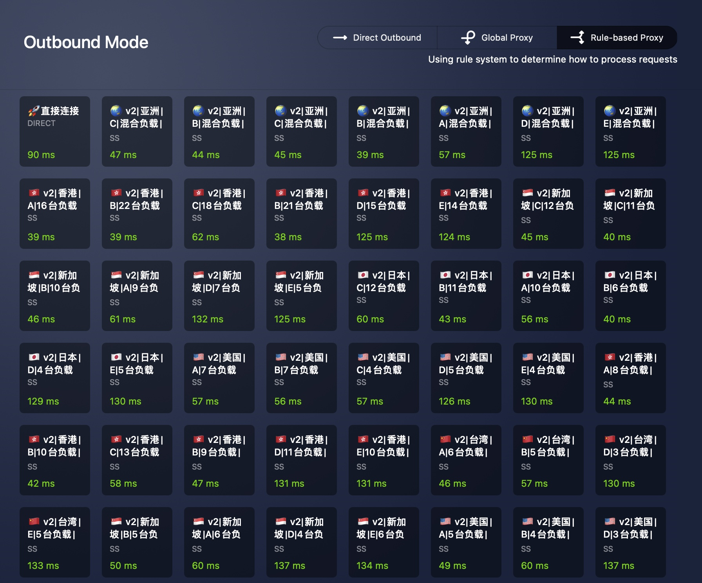

2021 Netflix 最佳观看指南
上次更新：2021.10.06
前言＃
本站旨在帮助大家在国内环境下更好的使用 Netflix，并获得最佳的奈飞观影体验。
内容包括 👉🏻： ✓ Netflix账号、✓ Netflix机场推荐、✓ 韩剧《鱿鱼游戏》、✓ 奈飞小铺、✓ 奈飞神剧推荐、✓ 奈飞简体中文设置、✓ 免费Netflix影片、✓ Netflix常见错误代码及解答、✓ 精选Netflix浏览器插件推荐、✓ 4K超清配置指南等。
Netflix是什么＃
Netflix，中文名 奈飞，又称网飞，也有些网友戏称"奶飞"。
Netflix 是一家美国的在线流媒体平台，成立于1997年的美国加利福尼亚州。
截止目前，奈飞在全球190多个国家和地区开展运营（不包括中国、朝鲜、克里米亚、叙利亚等四个国家及地区），总计拥有 1.83 亿名付费会员。据悉，目前奈飞平台的影视剧数量高达1.3万部。多个数据综合显示，奈飞是全球流媒体平台中当之无愧的 No.1。
国内如何看 Netflix＃
想要在国内愉快都使用Netflix并获得最佳的观影体验，你需要做好以下几个方面的准备：
如何购买奈飞账号＃
分两种情况：看你需要的是 Netflix 独享账号 还是 共享奈飞账号。
如果你需要用Netflix账号同时在多台设置登陆（电视、iPad、手机），并且还要和朋友之间共享，那么你可能需要一枚独立的Netflix账号（附带5个车位）。这种情况下，最好的解决方案是：
购买低价区 Netflix 礼品卡，亲自注册4K Premium账号
推荐购买礼品卡注册Netflix账号的地区有：
- 菲律宾
- 阿根廷
除此外，即便你是一名奈飞重度用户，并且在手机、平板、电脑之间来回切换使用，其实你需要的只不过是其中一个车位而已，也就是所谓的“合租奈飞账号”就足够了。这样的好处是，你能以大约 1/4 的独立Netflix账号价格，享受最高级的4K UHD高端观影体验。
普通用户请选择合租Netflix账号
目前优质稳定的奈飞合租账号售卖渠道，99%使用的都是礼品卡（Netflix Gift Card）注册并货真价实付费的正版账号，这类账号有以下两个突出的特点：
- 账号价格相对稍高（礼品卡成本比虚拟卡免费开通贵得多）
- 使用过程极其稳定（基本不存在翻车的可能性）
奈飞小铺＃
奈飞小铺是业内首家以 独立站 + 微信公众号 + 自动发货 + 自助售后 + 无限续费 模式运营的独立Netflix合租账号售卖平台。
奈飞小铺网站的自动化程度很高，你可以看到最新的合租账号发车信息，包括当前车位还有几枚空位、其他合租室友的头像昵称。使用微信支付或者支付宝付款后，就可以第一时间查看你购买的Netflix账号、密码以及具体车位信息（对号入座，按照分配给你的车位进去奈飞网站，修改昵称和头像）。
奈飞小铺除了支持在微信公众号中随时查阅账号信息，还能在其他合租室友修改密码后，一键申请重置密码。另外，你还可以选择加入他们的官方电报群，群里会有官方售后客服随时解答用户提问。
目前奈飞小铺的 Netflix、Spotify、YouTube、HBO账号最新定价如下：
| 平台 | 2个月 | 3个月 | 6个月 | 12个月 | 每月价格 |
|---|---|---|---|---|---|
| Netflix | ¥ 44 | ¥ 64 | ¥ 128 | ¥ 250 | ¥ 22 |
| YouTube | N/A | N/A | ¥ 66 | ¥ 126 | ¥ 11 |
| Spotify | N/A | N/A | N/A | ¥ 132 | ¥ 11 |
| HBO Max | N/A | ¥ 138 | ¥ 272 | ¥ 529 | ¥ 49 |
奈飞小铺购买参考
- 最低购买时长：2个月
- 自动查看账号信息：是 ✅
- 公众号自助服务：是 ✅
- 申请一键重置密码：是 ✅
- 官方售后群：是 ✅
- 是否亲自使用过：是 ✅
- 奈飞小铺优惠码： kannetflix（9.4折优惠，仅可用于6个月、12个月套餐，可与官网立减优惠同享）❤️
- 推荐度：❤ ❤ ❤ ❤ ❤
对于以合租方式购买Netflix账号来说，有以下四点最重要：
- 账号质量（礼品卡付费最佳，虚拟卡试用号尽量回避）
- 购买、发货便利性（付款后秒发货最佳）
- 售后方便（密码被改后能一键重置最佳）
- 不跑路
综合而言，奈飞小铺和奈飞Pro提供的账号质量、发货速度、售后服务等方面体验都很不错。如果你恰好也需要一枚Netflix合租账号，那么这两家很值得考虑。
看奈飞对代理有什么要求＃
Netflix封杀普通代理＃
如果你尝试用普通代理打开奈飞，很可能会看到这样一条提示：“You seem to be using an unblocker or proxy”，或者"您似乎正在使用解除封鎖程式或 Proxy"。这就意味着，当前代理IP已经被奈飞封杀，你需要换一个能正常观看奈飞视频的代理。
基于奈飞政策原因，通常不允许用户跨区浏览奈飞的影视库资源，所以对常见的服务器IDC厂商所在的IP段进行了封杀。这也是为什么你用Google Cloud Platform、Amazon云、微软云、阿里云国际自建梯子可以正常访问Google、YouTube，但无法正常观看奈飞的原因。
解锁Netflix＃
所谓解锁Netflix，即通过ShadowSocks、SSR、V2ray、Vmess等代理服务提供商提供的Netflix流媒体专用节点，解锁Netflix资源，也就是通常说的 Netflix机场。
适合看Netflix的代理，最好能满足以下两个条件：
- 多条解锁Netflix代理封锁的线路（最好包含新加坡、香港、台湾、美国等多条线路）
- 大流量（1080P视频每小时消耗约1.5GB流量）
目前，适合Netflix等流媒体的机场普遍提供5～20条线路，支持解锁奈飞、HBO、Hulu、动画疯等音视频流媒体资源。
其中，流量价格大约为 ¥20/月 = 100GB 计费流量，尤其适合奈飞这种极其消耗流量的流媒体服务。以下是几家值得推荐的适合观看Netflix的机场：
奈飞机场推荐＃
1. 速蛙云＃
速蛙云在全球多地均部署了多台服务器节点，并启用负载均衡技术，来最大限度的保证热门时段大流量使用的节点压力。速蛙云的主要节点除了包含热门区域如香港🇭🇰、新加坡🇸🇬、美国🇺🇸、台湾🇹🇼、日本🇯🇵等，流媒体解锁服务适合Netflix、YouTube等用户群体。同时，速蛙云还包含一些小众节点，比如德国🇩🇪、澳洲🇦🇺、南美🇧🇷、俄罗斯🇷🇺、印度🇮🇳等区域，适合一些特殊需求用户。
通过一段时间的亲自体验（包含使用新加坡节点观看近期热门剧《鱿鱼游戏》），速蛙云优秀的后端负载均衡技术和众多的节点数量，几乎都能保证流畅观看4K清晰度的Netflix。
除此外，速蛙云对多平台、多客户端的支持也比较到位，Clash、Surge、V2Ray等均有专属订阅地址，一键订阅非常省心。
速蛙云基本参数
- 是否接受月付：是 ✅
- 多设备在线：是（3～15个设备） ✅
- 在线客服：是 ✅
- 月底重置流量：是 ✅
- 独家定制客户端：否 ❌
- 支持客户端：Clash、 Clash X、 QuantumultX、 Shadowrocket、Surge
- 是否支持试用：是 ✅ ，¥1 体验 5G 流量（24小时有效期）
速蛙云套餐价格
| 套餐 | 流量 | 价格 | 每GB价格 |
|---|---|---|---|
| VIP 1 - 100 月付 | 100GB/月 | ¥ 20/月 | ¥ 0.2 |
| VIP 2 - 150 月付 | 150GB/月 | ¥ 30/月 | ¥ 0.2 |
| VIP 1 - 200 月付 | 200GB/月 | ¥ 35/月 | ¥ 0.175 |
| VIP 2 - 300 月付 | 300GB/月 | ¥ 55/月 | ¥ 0.183 |
| VIP 1 - 200 季付 | 200GB/月 | ¥ 30/月 | ¥ 0.15 |
| VIP 2 - 300 季付 | 300GB/月 | ¥ 40/月 | ¥ 0.13 |
| VIP 1 - 15 年付 | 15GB/月 | ¥ 87/年 | ¥ 0.48 |
| VIP 1 - 60 年付 | 60GB/月 | ¥ 219/年 | ¥ 0.3 |
| VIP 1 - 200 年付 | 200GB/月 | ¥ 220/年 | ¥ 0.09 |
| VIP 2 - 400 年付 | 400GB/月 | ¥ 330/年 | ¥ 0.07 |
| VIP - 1000 年付 | 1000GB/月 | ¥ 600/年 | ¥ 0.05 |
速蛙云节点信息
速蛙云 VIP2 目前有66个节点（数量惊人），绝大部分节点的 Ping 值都在100ms以内，其中大多数香港、新加坡的节点Ping值基本在50ms以内。

速蛙云购买参考
- 是否亲自使用过：是 ✅
- 是否正在使用：是 ✅
- 推荐度：❤ ❤ ❤ ❤ ❤
2. 无界＃
无界为一家走中高端路线的V2Ray机场，当前提供约30条线路节点，其中包括香港、台湾、日本、新加坡、俄罗斯等节点，可以正常解锁Netflix、TVB、动画疯等视频资源，同时还包括5条企业级IPLC专线。
平台对新人友好，注册后免费提供提供 1GB 的不限速试用流量（有效期1小时），方便进行节点连接的稳定性和速度测试。
无界基本参数
- 是否接受月付：是 ✅
- 多设备在线：是 ✅
- 在线客服：是 ✅
- 协议类型：Vmess
- 月底重置流量：是
- 独家定制客户端： Windows ✅、MacOS ✅、iOS ❌、Android ✅
- 支持客户端：Clash、 Clash X、 MerlinClash、QuantumultX、 Shadowrocket、Surge
- 是否支持试用：是 ✅ ，注册后立即提供 1GB 不限速试用流量（有效期：1小时）
无界套餐价格
| 套餐 | 流量 | 月付价格 | 年付价格 | 每GB价格 |
|---|---|---|---|---|
| 轻量套餐 | 100 GB | ¥ 20 | ¥ 199 | ¥ 0.2 |
| 豪华套餐 | 250 GB | ¥ 40 | ¥ 399 | ¥ 0.16 |
| 畅爽套餐 | 500 GB | ¥ 60 | ¥ 599 | ¥ 0.12 |
| 闲时套餐 | 100 GB | N/A | ¥ 99 | ¥0.99 |
| 无限套餐 | 1000 GB | N/A | ¥ 999 | ¥ 0.99 |
| 定制套餐 | 不限 | N/A | ¥ 9999 | N/A |
无界节点信息
无界Wallless轻量套餐目前有19个节点，包括香港、台湾、新加坡、美国等，绝大部分均为原生IP，支持Netflix流媒体播放。除此外，无界还有印度、俄罗斯、菲律宾、阿根廷、土耳其等小众节点。如果是需要原生IP，注册低价区Netflix（比如土耳其、阿根廷），这些节点或许会对你有所帮助。
| 节点位置（轻量套餐） | 节点数量（总计19个） | 平均Ping值 |
|---|---|---|
| 直连 🇨🇳 | 0 | 102 ms |
| 香港 🇭🇰 | 2 | 163 ms |
| 台湾 🇹🇼 | 2 | 370 ms |
| 日本 🇯🇵 | 2 | 380 ms |
| 美国 🇺🇸 | 2 | 550 ms |
| 新加坡 🇸🇬 | 2 | 245 ms |
| 印度 🇮🇳 | 2 | 150 ms |
| 俄罗斯 🇷🇺 | 1 | 575 ms |
| 澳大利亚 🇦🇺 | 1 | 530 ms |
| 加拿大 🇨🇦 | 1 | 820 ms |
| 菲律宾 🇵🇭 | 1 | 650 ms |
| 阿根廷 🇦🇷 | 1 | 800 ms |
| 土耳其 🇹🇷 | 1 | 950 ms |
| 韩国 🇰🇷 | 1 | 420 ms |
无界购买参考
- 无界邀请码：
6C7QIxW4 - 无界优惠码： happy100years（8折优惠，仅限轻量套餐可用，有效期截止 2021.07.31）
- 无界优惠码： dayof10w （7折优惠，仅限豪华套餐、畅爽套餐、无限套餐使用，有效期截止 2021.07.31）
- 是否亲自使用过：是 ✅
- 是否正在使用：是 ✅
- 推荐度：❤ ❤ ❤ ❤ ❤
3. Duang＃
Duang：一家走中高端路线、主打线路质量、稳定性和连接速度的新机场。
Duang主打线路质量，所有节点均使用 跨境专线，不过墙，无QOS干扰，单线路最高速率可达1G。
基础的 Mini 套餐包含 50GB/月 的流量，每月价格 ¥20，线路则包括香港🇭🇰、新加坡🇸🇬、台湾🇹🇼、日本🇯🇵、和美国🇺🇸。
与其他同类型机场比，流量单价稍高（大概翻倍😳），但线路质量更优、稳定性更好、连接速度更快，实际使用下来，体验都相当不错。无论是日常 Google搜索、还是Netflix、Spotify、YouTube这些流媒体，速度和稳定性相比其他机场，都有一个比较大的提升，各方面来讲无限接近于之前我曾经续费几年的另一家平台（价格 ¥35/月，30GB流量，堪称小奢侈）。
注：目前已将 Duang 作为主力在使用。
Duang基本参数
- 是否接受月付：是 ✅
- 多设备在线：是 ✅
- 在线客服：是 ✅
- 月底重置流量：是
- 独家定制客户端： 是 ✅（涵盖Windows、Android、iOS、macOS）
- 支持客户端：Clash、 Clash X、 MerlinClash、QuantumultX、 Shadowrocket、Surge
- 是否支持试用：否 ❌
Duang套餐价格
| 套餐 | 流量 | 月付价格 | 年付价格 | 每GB价格 |
|---|---|---|---|---|
| Mini套餐 | 50 GB | ¥ 20 | ¥ 200 | ¥ 0.4 |
| Basic套餐 | 150 GB | ¥ 35 | ¥ 350 | ¥ 0.23 |
| Pro套餐 | 300 GB | ¥ 55 | ¥ 550 | ¥ 0.18 |
| Gold套餐 | 500 GB | ¥ 75 | ¥ 750 | ¥ 0.15 |
| Business套餐 | 800 GB | ¥ 100 | ¥ 1000 | ¥ 0.125 |
| Light套餐 | 50 GB | N/A | ¥ 100 / 一次性 | ¥ 0.2 |
Duang节点信息
Duang的Mini套餐包含48个节点，其中香港、台湾、新加坡、美国等热门区域全面覆盖。这些节点都使用原生IP，且使用2000M专线高端线路，连接更稳定，速度更快，能更好的支持 Netflix 4K 超高清流媒体播放需求。
注：根据不同区域的平均 Ping 值来看，Duang的表现可圈可点。香港🇭🇰节点平均约75ms、台湾🇹🇼节点平均125ms，可谓优秀。至于实际使用，由于本机硬件设备所限，只能观看 1080P 清晰度的奈飞，实际表现画面清晰，极少断连，非常稳定。
P.S. Duang 近期大幅增加了节点数量，一度从26个节点上升到48个之多，让人有点吃惊。新增节点主要来自于新加坡、美国以及韩国，且绝大多数节点都原生支持Netflix。
| 节点位置(Mini套餐) | 节点数量(总计48个) | 平均Ping值 |
|---|---|---|
| 直连 🇨🇳 | 0 | 110 ms |
| 香港 🇭🇰 | 10 | 75 ms |
| 台湾 🇹🇼 | 4 | 125 ms |
| 日本 🇯🇵 | 10 | 140 ms |
| 新加坡 🇸🇬 | 10 | 249 ms |
| 美国 🇺🇸 | 10 | 355 ms |
| 韩国 🇰🇷 | 4 | 379 ms |
Duang购买参考
- Duang邀请码：owK4XmIf
- Duang优惠码：DuangCloudWula（8折限时优惠码，随时失效）
- 是否亲自使用过：是 ✅
- 目前是否在用：是 ✅ （Mini套餐）
- 推荐度：❤ ❤ ❤ ❤ ❤
Netflix会员如何收费＃
根据所在地区不同，奈飞的每月收费标准也大相径庭。
截至目前（2021.03），以最贵的 Netflix 4K 高级帐户来看，全球定价最便宜的是土耳其，每个月只需要 ¥43.3；最贵的是瑞士，每个月需要 ¥163.8。两个地区定价相差接近3倍。
总体而言，欧洲区普遍较贵，美国其次，土耳其由于其货币里拉一路贬值，是目前最便宜的地区。
美国：Netflix收费标准（¥113/月）＃
- Basic - (每月 $8.99，约 ¥63.5 ) ，同时只能在一台设备上观看，480P标清视频.
- Standard - (每月 $12.99，约 ¥91.8 ) ，同时可以在两台设备上观看，720P、1080P高清视频.
- Premium - (每月 $15.99 ，约 ¥112.9 ) ，同时可以在四台设备上观看，4K超高清视频.
土耳其：Netflix收费标准（全球最便宜，¥43/月）＃
- Basic - (每月 17.99 TRY，约 ¥18.6 ) ，同时只能在一台设备上观看，480P标清视频.
- Standard - (每月 29.99 TRY，约 ¥30.9 ) ，同时可以在两台设备上观看，720P、1080P高清视频.
- Premium - (每月 41.99 TRY，约 ¥43.3 ) ，同时可以在四台设备上观看，4K超高清视频.
香港：Netflix收费标准（¥85/月）＃
- Basic - (每月 63 港幣，约 ¥57.4 ) ，同时只能在一台设备上观看，480P标清视频.
- Standard - (每月 78 港幣，约 ¥71.1 ) ，同时可以在两台设备上观看，720P、1080P高清视频.
- Premium - (每月 93 港幣 ，约 ¥84.8 ) ，同时可以在四台设备上观看，4K超高清视频.
瑞士：Netflix收费标准（全球最贵，¥164/月）＃
- Basic - (每月 11,90 CHF，约 ¥89.0 ) ，同时只能在一台设备上观看，480P标清视频.
- Standard - (每月 16,90 CHF，约 ¥126.4 ) ，同时可以在两台设备上观看，720P、1080P高清视频.
- Premium - (每月 21,90 CHF ，约 ¥163.8 ) ，同时可以在四台设备上观看，4K超高清视频.
下面这个链接的页面汇总了全球所有国家地区的各种套餐的Netflix定价信息，包括了当地货币、美元价格、人民币价格，有兴趣的请自行参阅：
如何白嫖奈飞账号＃
Netflix 停止美国、土耳其地区的首月免费试用＃
最新消息：欧美疫情持续蔓延，（鸡贼的）奈飞首先停止了在土耳其的首月免费试用，如今大刀甚至砍向了自己的大本营：美国。据最新消息，奈飞已经停止了在美国地区的首月免费试用。以此看，未来美区奈飞账号合租价格还会进一步攀升。
白嫖奈飞账号步骤＃
如果你真的打算白嫖奈飞账号，那么你可能需要具备以下几个条件：
- 外网环境
- 支持奈飞扣款的信用卡、PayPal、礼品卡（Netflix Gift Card）
- 注册IP所在国家的手机号（用来接收奈飞的OTP，即手机验证码）
如果你用国内IP直接打开奈飞网站，它会提示你：“Sorry, Netflix is not available in your country yet”。这说明奈飞网站并没有被大陆屏蔽，只不过"不在中国运营"罢了。
所以，首先你需要有一个外网环境，比如美国IP、香港IP、台湾IP、土耳其IP等。
接下来，你还要准备一张能扣款验证（或付月费）的双币种信用卡、VISA、Master、Amex等信用卡，或者一张外币的虚拟信用卡（VCC）。
如果你想白嫖奈飞的首月免费试用账号，根据你当前选择的IP地址所在地，你的虚拟卡内至少需要有当地一货币单位的余额，用于奈飞的首次扣款验证。比如，你用美国IP注册，则需要卡内有1刀余额；如果是欧元区，则卡内最低有1欧余额。目前1欧元约等于1.13美元，所以用美元卡在欧元区注册，则卡内最低需要1.2刀余额（我在这个问题上吃过亏）。
万事俱备以后，直接打开奈飞官网，简单填写你的邮箱地址、账号密码，以及信用卡信息就可以注册成功了。
注意：如果你使用的是虚拟信用卡（VCC），那么很大可能性，你会卡在提交信用卡信息页面。因为奈飞政策缘故，目前针对首月免费试用账户，已经封杀了很多之前被滥用的虚拟卡，比如MOVO卡（422803）、BOA虚拟卡（431305）、花旗虚拟卡（540302）、Yandex虚拟卡（559900）、Barter虚拟卡（405640）等。想要使用这些虚拟卡成功开通奈飞的免费试用账号，你需要准备住宅型家用代理IP或手机原生代理IP，或者准备好当地手机号接收验证码（我在这个问题上和奈飞苦苦战斗了小半年，耗费心血无数，教训多到数不清）。
如果虚拟卡这条路子走不通，你可以考虑直接用奈飞礼品卡来注册。目前可以考虑美区、港区的奈飞礼品卡，或者土耳其的奈飞礼品卡。
需要注意的是，目前奈飞已经取消土耳其的首月免费试用政策（被薅的太疼了）。不过由于其巨大的价差空间，即便在取消首月免费试用的前提下，哪怕使用土耳其礼品卡开通正规付费订阅账户，依然很划算。
如果条件所限，或者不想这么麻烦，你还可以考虑直接购买合租或独享的奈飞账号。
如何免费看 Netflix＃
免费看 Netflix 的三种方式：
- 白嫖奈飞首月免费试用
- Cookies 共享方式看奈飞
- Netflix 官方免费试看影视剧
除了前面讲的自己申请奈飞首月免费试用来白嫖奈飞外，还有一种可以免费看奈飞的方式：Cookies共享看奈飞。
简单的说就是有人提供自己已经付费或白嫖开通的账号（付费的相对更稳定些），分享已经登陆账号的 cookies ，你通过浏览器插件的方式修改自己的 cookies，然后就可以免登录、免费看奈飞了。
不过这种方式由于使用的人多，容易造成频繁被挤下车，账号失效导致无法继续观看等，整体使用体验较差，仅供测试或真的只是临时用一下，而且大部分时候还要凭运气才能挤得进去。长期稳定看奈飞，还是自己注册或合租账号体验才会更好。
（由于用户反馈此方式体检较差，撤去cookies方式白嫖链接入口）
为了进一步扩大奈飞在流媒体服务界的市场份额，拉拢更多新用户入场，近期奈飞官网提供了免费试看自制剧集的服务，有电影也有电视剧（但只给免费看第一集）。
不完全统计的奈飞官网免费试看影视剧集如下：
- 怪奇物语(Stranger Things)（高分剧）
- 名校风暴(Elite)（没看过，女主貌似是纸钞屋里那个女学生）
- 谋杀疑案(Murder Mystery)（电影）（看过，个人点评：emmmmmm….）
- 蒙上你的眼(Bird Box)
- 有色眼镜
- 爱情盲选(Love is Blind)
- 教宗的承继(The Two Popes)
- 我们的星球(Our Planet)（高分纪录片）
- 格蕾丝与佛兰基（电影）
Netflix如何看 4K 高清＃
苹果 iOS 手机、iPad（最高1080P）＃
软硬件要求：
使用非国区Apple ID（美区、港区、台湾区等都可以），在 App Store 下载 Netflix 官方APP后登陆你的奈飞账号，即可观看任意喜爱的美剧资源。
其中，iPhone X、XS 和 XS Max 等支持的最高播放分辨率为 1080P，而相对低端的XR等则只支持到720P。
有 Retina 显示屏（每英寸像素数大于等于326ppi）的 iPad 上最高支持 1080P，否则只支持720P。
苹果 Mac 笔记本（最高4K）＃
最新消息
2021年起，Mac Safari 已开始支持 Netflix 4K HDR，具体要求为：
带有 Apple T2 安全芯片的部分 2018 或更高版本的 Mac 笔记本。 所有外接显示器必须具有 60Hz 4K 功能和符合 HDCP 2.2 的连接
软硬件要求：
使用苹果笔记本自带的Safari浏览器，默认支持 1080P 和 HDR。
Chrome、Firefox等浏览器默认最高支持到720P，不过你可以通过使用Chrome插件Super Netflix，强行切换为1080P清晰度。但此类插件作者遭奈飞官方投诉而把1080P清晰度功能隐藏，操作上略显麻烦。建议直接使用官方Safari浏览器观看奈飞原生1080P视频。
安卓 Android 手机＃
软硬件要求：
硬件：最低安卓5.0系统以上的手机，基本都可以正常使用奈飞APP。
软件：在 Google Play 搜索 Netflix 并下载即可，如果你的手机没有Google Play，也可以直接在 APKPURE 上下载最新版Netflix APK。
Windows 10 PC 电脑（最高支持4K）＃
软硬件要求：
在 Win 10 上看奈飞，你有两个选择：
- Win 10 原生 Netflix UWP 应用
- 浏览器
Win10的原生奈飞应用支持4K清晰度，但首先你需要把自己的 Windows 应用商店切换到美区（无痛切换），然后搜索Netflix就可以直接下载。
或者，你可以使用 Edge 浏览器，也支持4K。但其他浏览器，比如Chrome等，最高只支持1080P。
显示器方面，你需要一台 4K 60HZ 的显示器，同时显示器接口还要支持 HDCP 2.2；显卡的华，需 7 代以后的 Intel CPU，N 卡则最低需要 GTX 1050 的款式，并把驱动更新到最新状态。
安卓电视盒子、Apple TV（最高支持4K）＃
软硬件要求：
必须经过奈飞认证过的电视盒子，才可以正常安装和使用奈飞。具体支持情况如下：
- Apple TV 4K ：同时支持4K、HDR 10、Dolby Vision
- Xbox One S 、 Xbox One X：全支持
- Chromecast Ultra：支持 4K 、 Dolby Vision
- Mi Box S 国际版：支持 4K 、 HDR
- Nvidia Shield 、 Nvidia Shield Pro：支持 4K 、 HDR
- Amazon Fire TV 4K Stick：支持 4k 、 Dolby Vision
此外，连接电视盒子的电视，也需要支持60Hz 4K、HDR、Dolby Vision等才可以真正享用以上这些功能特性。同时，连接电子盒子与电视的线材也需要支持HDMI2 和 HDCP 2.2，如果有外接音响，也是同理。
备注：由于不含Netflix ESN 码，小米盒子国内版即使刷国际版固件，仍然无法正常安装和使用奈飞。
智能电视上（最高支持4K）＃
软硬件要求：
有一些智能电视（部分型号）内置 Netflix 客户端，如海信、LG、松下、飞利浦、三星、夏普、索尼、东芝等。具体品牌及型号，可参考奈飞官网的介绍页面。
其中，奈飞官网还提供了几个官方推荐的智能电视品牌及型号，包括：松下 HX900Z、 HX750W，三星 Q950TS、 Q900TS 等，索尼X8000H 、X8007H 等。
FAQ：Netflix常见使用问题及答案＃
如何查看Netflix分辨率＃
问题解答：
使用浏览器的快捷键查看Netflix的分辨率等数据信息，再次按下快捷键可取消显示。
Windows平台快捷键：
CTRL + SHIFT + ALT + D
Mac平台快捷键：
CTRL + SHITF + OPTION + D
其中的 Playing bitrate (a/v): 128 / 4535 (1280x720) 即为当前的Netflix码率。
Netflix分辨率、码率和对应清晰度如下所示：
23.976 fps
| 分辨率 | 码率 | 每小时流量消耗 |
|---|---|---|
| 480p (720×480) | 1750 kbps | 792 MB |
| 720p (1280×720) | 3000 kbps | 1.3 GB |
| 1080p (1920×1080) | 4300-5800 kbps | 1.9 GB to ~2.55 GB |
| 1440p (2560×1440) | 6350 kbps | 2.8 GB |
| 4K (3840×2160) | 8000-16000 kbps | 3.5 GB to ~7 GB |
如果Netflix是以 59.94fps 播放的视频，则相同分辨率的情况下，每小时消耗的流量几乎要翻倍，具体数据如下：
59.940 fps
| 分辨率 | 码率 | 每小时流量消耗 |
|---|---|---|
| 720p (1280×720) | 3600 kbps | 1.6 GB |
| 1080p (1920×1080) | 6960 kbps | 3.1 GB |
| 4K (3840×2160) | 16000 kbps | 7 GB |
Netflix和爱奇艺、优酷、腾讯视频有什么区别＃
一句话形容就是"天壤之别"。
国内的优酷视频、腾讯视频、爱奇艺等三大视频平台，广告主才是这些平台等金主爸爸，而对于只靠付费会员为生的Netflix，付费会员是真正需要伺候好的“爸爸”，所以奈飞需要想尽一切办法让用户满意，而国内平台则对用户体验不管不顾。
这也就是为什么你明明买了优酷、爱奇艺、腾讯视频的会员，还是一样被各种广告强X到闪瞎眼的缘故。因为付广告费给他们的才是大爷，而你不是。
但是在奈飞，只要你付了月票（哪怕首月白嫖的也算），你就可以在全设备、全平台（不限电视、平板、手机、电脑），无限制、无广告观看4K全高清晰度的视频（高级会员），还能下载视频到本地设备。在整个奈飞网站，你不会看到任何广告，甚至于每部影视剧开头才会看到几秒钟的奈飞台标（业界良心），其他任何时间则完全属于沉浸式体验。
总之，在Netflix，你才能真正感受到一流的在线影视流媒体体验。
我的代理可以上Google、YouTube，但为什么不能看Netflix＃
问题解答：
奈飞对代理有要求，普通代理都被封杀了，需要有原生IP，没被奈飞检测到的代理节点才可以正常看奈飞。
我为什么不能看4K分辨率的Netflix视频＃
问题解答：
想要看4K超高清分辨率的奈飞视频，需要几个条件同时满足：
- 你的账号支持4K（需要最高等级的账号）
- 你的播放设备支持4K（Mac笔记本最高支持1080P，Win笔记本需要Edge播放器）
- 网速要足够快，建议最低25Mbps，推荐使用 FAST.COM 测速（奈飞自家的测速网站）
用Netflix看视频每小时要消耗多少流量＃
问题解答：
一般来说，1080P的视频，每小时平均消耗1.5GB~3GB的流量；我自己用 Safari 浏览器看奈飞，大概每小时消耗2GB流量。
4K 视频，每小时最高消耗 7GB 流量。
如何手动调节Netflix的视频分辨率？我的画面怎么这么糊＃
问题解答：
首先，可以尝试在个人profile -> “播放设置"中把"数据使用量"调节到"最高”，也就是"最佳视频画质"。
其次，正常播放视频的时候，是无法手动调节画质分辨率的。奈飞会根据你当前网络状况自动调节分辨率，也就是画质清晰度。一般打开视频刚开始会比较糊，缓冲一段时间清晰度自然就高了。忍受不了的可以暂停视频缓冲一段时间再继续播放。
Netflix如何设置简体中文字幕＃
问题解答：
最简单的方式：连接新加坡IP的节点，然后在个人Profile中设置语言为"中文"。即可在网站、APP上看到中文界面显示，并在看视频时能够选择"简体中文"语言的字幕。
如果是美国、香港、台湾等地区节点，当你设置"中文"时，默认只有"繁体中文"。
如果没有新加坡节点，还可以通过手动发送POST请求的方式，强行修改为"简体中文"。
具体操作方法，请参考本站文章： Netflix设置简体中文语言
Netflix常见错误提示及解决方案＃
抱歉，服务中断。您的账户无法在此地点使用。错误代码：S7111-1331＃
错误原因：
这个错误提示，是奈飞去年（2020）专门针对土耳其区奈飞账号专门新增的限制。具体表现为，如果你的账号是用土耳其礼品卡注册的，那么使用香港地区IP地址时，就会提示你"无法在此地点使用"。
解决方案：
切换到台湾、新加坡的节点，就可以跳过这个限制，继续观看奈飞节目。或者，切换为一个非土耳其区的奈飞合租账号，比如美区，就可以正常使用港区IP。
流媒体错误。您似乎使用了解锁工具或代理。请关闭此类服务 然后重试。错误代码：M7111-5059＃
错误原因：
由于版权原因，奈飞禁止使用代理跨区访问资源。换句话说，你使用的代理IP被奈飞检测到，而遭到封杀。
解决方案：
切换到一个支持观看奈飞的节点。这类代理一般都有原生IP，不会被奈飞检测到而封杀。
此影片不再您等区域提供观看。错误代码：22004＃
错误原因：
版权受限，当前地区无此影片版权。一般在使用某些香港节点时会出现这个提示，比如绝命毒师等剧集无法在这些节点观看。
解决方案：
切换其他节点，比如台湾🇹🇼、新加坡🇸🇬、美国🇺🇸节点，或者其他香港🇭🇰节点，即可解决此问题。
您上次付款出現問題，因此帳戶被暫停使用。＃
错误原因：
这个错误提示，一般多出现在"首月免费试用账户"上。说明你当前设备未清理cookies，导致被奈飞检测到，试用账号被封杀。或者账户礼品卡余额用尽，无法继续使用。
解决方案：
- 使用"奈飞试用账号"前，清理浏览器cookies、卸载重装奈飞APP
- 使用正规付费订阅奈飞账号
- 找上游商家续费礼品卡，或者重新购买新的账号
抱歉，此帐户已失效。或者：抱歉，本帳戶無效。＃
错误原因：
账号礼品卡余额耗尽，账号无法继续使用。
解决方案：
找上游商家续费礼品卡，或者重新购买新账号。自用账号，可以考虑新买"土耳其礼品卡"绑定到账户。
您的电子邮件地址无效。＃
错误原因：
邮件地址错误，奈飞无法发送验证或营销邮件到这个邮件地址。
解决方案：
更新一个有效的邮箱地址。
无法在选定设备上进行播放。错误代码：40102＃
错误原因：
一般多为网络问题，导致在智能电视、电视盒子上播放时遇到此错误提示。
解决方案：
- 切换 WIFI 网络
- 切换代理节点
- 卸载奈飞APP后重新安装
“您下载内容的设备数量过多。错误代码：10016-2300＃
错误原因：
一般发生在合租账号上，4K账号最多支持4个设备同时下载到本地设置，超过此数量则会遭遇此提示。
解决方案：
- 删除在别的设备上下载的内容
- 等别人清理了自己已下载内容后再尝试下载
- 切换为独享账号
抱歉，您的所在地区目前还无法使用Netflix。＃
错误原因：
中国地区IP无法观看奈飞视频。
解决方案：
打开代理，并切换到一个支持奈飞的节点再试。
Netflix常用浏览器插件汇总＃
NflxMultiSubs (Netflix Multi. Subtitles) 奈飞双语字幕 Chrome 插件＃
插件介绍：
安装 NflxMultiSubs 插件后，可以在看任何奈飞视频时，同时选择两种不同语言的字幕，比如同时显示英语、简体中文，方便语言学习。或者解决那些没有新加坡节点，无法手动选择简体中文字幕的用户。此外，插件还支持调节字幕的位置和显示大小。
安装插件：
打开插件所在的Chrome网上应用商店，下载 NflxMultiSubs 插件安装即可。
Super Netflix 奈飞功能增强 Chrome 插件＃
插件介绍：
安装 Super Netflix 插件后，能够实现很多自定义功能，比如上传外挂字幕、调节视频播放速度（支持 0.5x 到 4x ）、查看视频数据信息、切换影片风格（正常、光明、更亮、黑夜、深夜、黑白風格）等功能。
安装插件：
直接在 Chrome应用商店下载安装 Super Netflix 插件。
Netflix 1080p 奈飞强制1080P Chrome 插件＃
插件介绍：
安装 Netflix 1080p 插件后，可以强行开启1080P清晰度（Chrome默认只有720P清晰度）以及开启5.1声道支持。
安装插件：
由于此插件已经在 Chrome应用商店下架，需要按照以下步骤开启。
- 在Github下载zip格式的插件压缩包，👉 去下载 https://github.com/truedread/netflix-1080p（点击 Code ，选择 Download ZIP），并解压缩ZIP文件；
- 在Chrome浏览器的标签页输入：👉 chrome://extensions/ ，右上角：开启 “开发者模式”；
- 左上角，选择 “加载已解压的扩展程序”，选择第一步解压好的文件夹
经过以上三个步骤，在Chrome浏览器重新打开Netflix视频，就可以自动切换到1080P清晰度了。
打开奈飞测试视频地址，可以在右上角看到输出参数：1920 x 1080
备注：如果安装 1080P插件后，出现"服务中断，M7111-1331"的错误提示，建议屏蔽此插件后再试。我在本地测试时，出现类似错误，停用插件后才正常。
Netflix AutoSkip: Intro, Next Episode SKIP 奈飞自动跳过片头、片尾 Chrome 插件＃
插件介绍：
安装 Netflix AutoSkip 插件后，可以自动跳过片头介绍、片尾"查看工作人员名单"，追剧体验再上一层楼。
安装插件：
直接打开 Chrome应用商店，下载 Netflix AutoSkip 插件安装后使用。
Aspect Ratio 21:9 奈飞宽屏显示调整 Chrome 插件＃
插件介绍：
安装 Aspect Ratio 21:9 插件后，可以做到让视频在 21:9的显示器上全屏显示，不会再留下恼人的黑边（注意：会裁剪掉一点上下部分的画面）。
安装插件：
直接打开 Chrome应用商店，下载 Aspect Ratio 21:9 插件安装后使用。
Film scores for Netflix 奈飞影片评分 Chrome 插件＃
插件介绍：
安装 Film scores for Netflix 插件后，可以在预览页面的每部影片右下角显示影片评分，数据来源于IMDB、The Movie DB、Nflix.pl 等。这样就再也不用担心一不小心选个烂片了。
安装插件：
直接打开 Chrome应用商店，下载 Film scores for Netflix 插件安装后使用。
Netflix全球各国影视剧数量（截止2021年03月）＃
- No.1 美国：约4000部电影，1900部电视剧 （除奈飞自制剧外，大部分没有中文字幕）
- No.2 香港：约2900部电影，1650部电视剧 （基本都有中文字幕）
- No.3 新加坡：约3300部电影，1900部电视剧 （基本上都有中文字幕）
- No.4 日本：约3500部电影，1900部电视剧 （基本都没有中文字幕）
- No.5 英国：约4100部电影，2100部电视剧（基本都没有中文字幕）
除了在奈飞首页查看常规影视资源外，Netflix还可以通过输入类别代码的方式，直接进入对应影视剧页面，具体方式请参考：